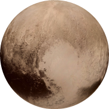

Mercury
Mercury is the closest planet to the Sun and the smallest planet in the Solar System.
Venus
Venus is close in size to Earth and, like Earth, has a thick mantle around an iron core, a substantial atmosphere, and evidence of internal geological activity.
Earth
Our home and the only planet know to have life.
Mars
Mars is smaller than Earth and Venus and it has an atmosphere of mostly carbon dioxide.
Asteroid Belt
A "belt" of asteroids seperating our inner and outer planets.
Jupiter
Jupiter is the largest plaent, infact it is 2.5 times the mass of all the other planets put together.
Saturn
Saturn is known for its rings, created from it being hit by astoroids.
Uranus
Uranus is the lightest of the outer planets and is the only planet with a tilted axis.
Neptune
The farthest plaent has 14 moons, the largest being Triton.

Pluto
As of 2006 Pluto is no longer considered a planet, it is now a dwarf planet.